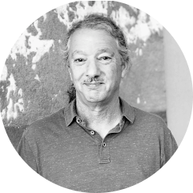

Art Talks In Person - Program #2
The Arts of Latin America with Sin Título Gallery
Saturday March 26, 2022

Finding the Universe in Oaxaca, The Wave, 2018
48” x 120” x 1”, Textile, wool felting
418 Sutter St, San Francisco, CA 94108
THE SPEAKERS
We are excited to present to you a chat with

Ernesto Quintanilla of Sin Título Gallery
Our Host and Curator
Ernesto Quintanilla is the founder and owner of Sin Título Gallery. Ernesto is a Stanford Engineer (MS 96) and has been a San Francisco resident for 25 years. His passion is collecting art and giving young, talented Latino and Latin American artists a platform to showcase their art in the U.S. and globally.
Ernesto and his partner Seth Skolnick co-founded Sin Tītulo Gallery in 2019. The ongoing Mainly Mexican exhibition in San Francisco is a partnership among Sin Tītulo Gallery, Michael McKechnie (who's an art collector and a friend of Ernesto and Seth's) and a few Mexico and US-based galleries that represent Latin American artists.

Diego Armando Plascenia Vega, our Moderator,
Artist and Engineer
Gary Goldberg, Artist, Photographer
and Professor Emeritus of the Arts
Gary Goldberg, Professor Emeritus of Art at Midwestern State University, Wichita Falls, Texas recently retired from teaching after 37 years. He has been photographing the unique qualities of Oaxaca City, Mexico for over twenty years. In his most recent body of work, he has come to see Oaxaca - its land, its sky, its cosmos - through its textured and richly layered walls and facades.
Read more about Gary's artwork and career
This body of photographic work is imbued with references to landscape, twentieth century art history, meditative states, and Mexican mythologies. The formal qualities are basic: one shape on a color ground, two colors at their intersections, scale, and land-sky relationships. As he interprets Oaxaca, Goldberg is inspired by the color field painters while remaining true to his vision of Oaxaca by highlighting the city’s ancient patina and depth. Goldberg’s photographs ask the viewer to decipher the image: what am I looking at, what is the scale?
Many of Goldberg’s photographs have been transformed into textiles using a dry felting process at Taller de Afelpado, San Agustín Etla, Oaxaca, Mexico. Each textile is hand made by a team of three artisans, often taking up to three weeks to complete. The wool used is dyed with natural pigments such as cochineal and indigo.
Goldberg received an MFA from the University of Nebraska in 1979. He has been the recipient of an Emerging Artist Grant from the National Endowment for the Arts. Goldberg’s photographs have been included in over one hundred exhibitions and publications throughout his career. Public collections in which Goldberg’s photographs appear include the Victoria & Albert Museum; the Photography Collection in the Harry Ransom Humanities Research Center at the University of Texas at Austin; Library of Congress in Washington, D.C.; The Wittliff Collections, Alkek Library, Texas State University, San Marcos, Texas; Sheldon Museum of Art, Lincoln, Nebraska; and the UT Southwestern Medical Center in Dallas.
Gary recently moved back to his home state and is living and working in Berkeley, California.
Food and drinks will be provided!
RSVP, Let Us Know You're Coming!
Donations Are Appreciated!
Thank you!